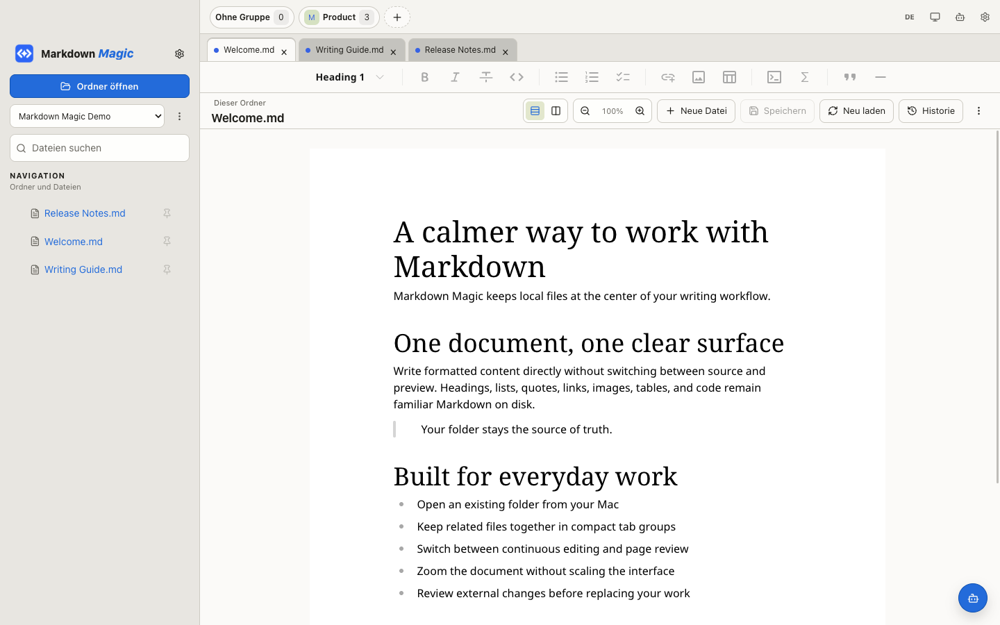
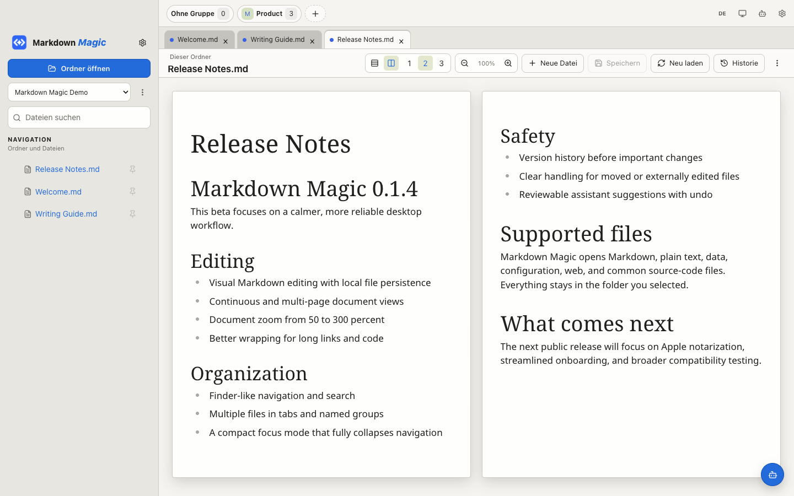
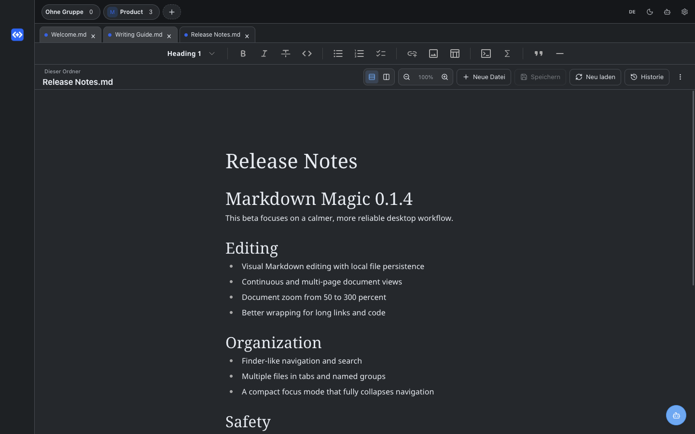

Visuell bearbeiten
Formatierter Text bleibt direkt editierbar. Markdown bleibt das Dateiformat im Hintergrund.
Lokaler Editor für macOS
Schreiben, ordnen und prüfen Sie Markdown-Dateien in einer ruhigen, visuellen Arbeitsfläche. Ihre Dokumente bleiben lokal auf Ihrem Mac.
macOS 13+ · Beta · lokal signiert, noch nicht notarisiert

Markdown Magic verbindet die Verlässlichkeit lokaler Dateien mit einer Oberfläche, die sich wie ein fokussiertes Mac-Werkzeug anfühlt.
Für den täglichen Schreibfluss
Formatierter Text bleibt direkt editierbar. Markdown bleibt das Dateiformat im Hintergrund.
Finder-Ordner, Suche, Tabs und Gruppen bilden Ihre bestehende Ablage ab.
Lange Dokumente als fortlaufenden Text oder in einer bis drei Seiten-Spalten lesen.
Historie, Konflikthinweise und prüfbare Assistenten-Vorschläge schützen Ihre Arbeit.
Dokumentansicht
Wechseln Sie zwischen einer ruhigen, fortlaufenden Bearbeitung und einer Mehrseitenansicht. Zoom und Spalten verändern nur das Dokument, nicht die Oberfläche.

Fokusmodus
Klappen Sie die Navigation vollständig ein und nutzen Sie die gesamte Fensterbreite. Light, Dark und Systemdarstellung sind direkt im Header erreichbar.

Local first
Beta installieren
Laden Sie die aktuelle Apple-Silicon-Version direkt herunter.
Öffnen Sie das DMG und verschieben Sie Markdown Magic nach Programme.
Da die Beta noch nicht notarisiert ist, beim ersten Start Rechtsklick → Öffnen wählen.